Explication de l’interface¶
Ce chapitre contient une explication détaillée des différents éléments qui composent l’interface d’utilisation du système de paiement Taler-Odoo.
Ce document explique les éléments de l’interface avec lesquels intéragir pour utiliser l’extension du système de paiement Taler-Odoo.
Installation de l’extension¶
{kind=link}
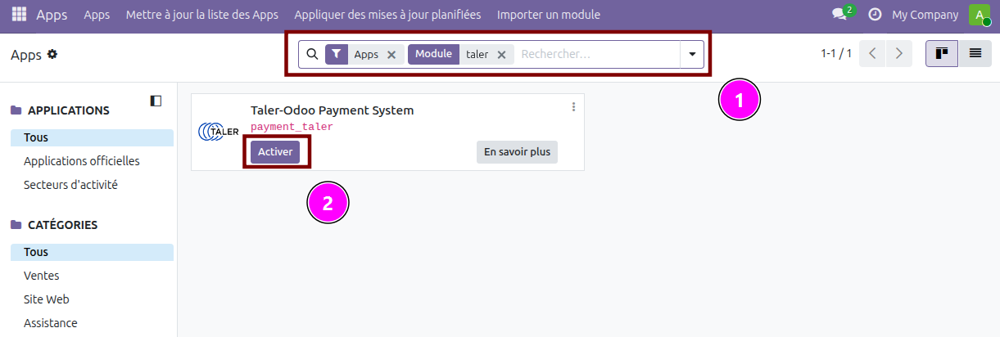
Après avoir copié les fichiers du module payment_taler dans le répertoire de votre instance d’Odoo, et après avoir réglé les paramètres de chemin, vous pouvez rechercher le module payment_taler (1) dans l’appli Odoo et l’activer (2). Activer le module revient à l’installer dans votre instance d’Odoo.
Installation du fournisseur de paiement¶
{kind=link}
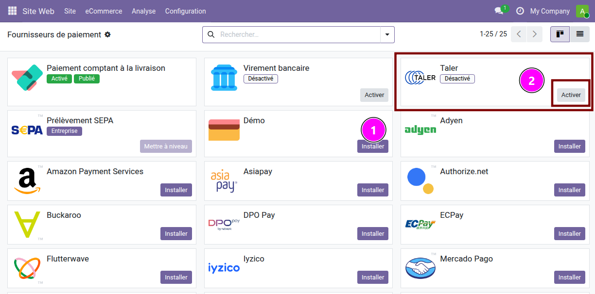
Après avoir activé le module, vous pouvez accéder à la liste des fournisseurs de paiment dans Site Web -> Configuration -> Paiments en ligne -> Fournisseurs de paiment.
Dans cette liste, vous trouverez le fournisseur de paiement Taler (1) (désactivé par défaut) que vous pourrez activer (2).
L’activer ou cliquer dessus vous redirigera vers la page du fournisseur de paiement.
{kind=link}
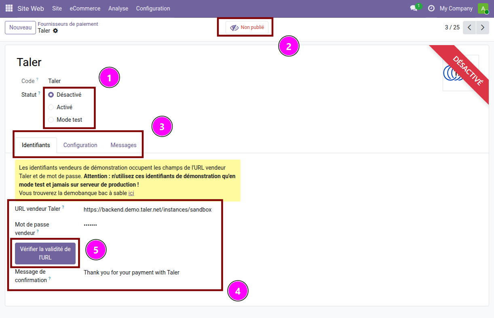
Sur cette page, vous pouvez consulter le statut actuel du fournisseur de paiement.
Celui-ci peut être
Désactivé,Activé, ou enMode test. (1) (Consultez la documentation pour plus d’information.)Le fournisseur de paiment peut être
Non publiéouPublié. (2) (Consultez la documentation pour plus d’information.
Vous pouvez voir trois onglets : Identifiants, Configuration et Messages. Seul l’onglet Identifiants est utile pour ce réglage.
Dans celui-ci, vous devrez paramétrer l’URL vendeur Taler ainsi que le mot de passe correspondant pour l’instance Taler que vous souhaitez utiliser.
Après avoir paramétré l’URL, cliquez sur Vérifier la validité de l'URL. Cela vous connectera à celui-ci et vous permettra de vérifier si les devises sélectionnées sont compatibles avec les devises Odoo. (Consultez le guide d’utilisation pour plus d’information.)
{kind=link}
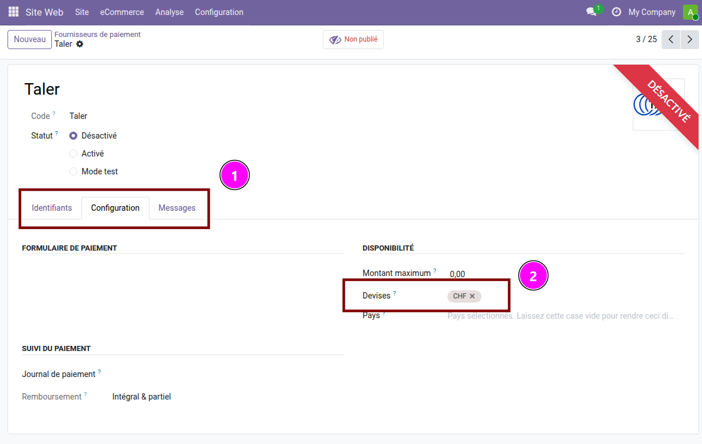
Dans l’onglet Configuration (1) du fournisseur de paiment, vous trouverez la liste des devises compatibles avec celui-ci 2.
Payer en ligne avec Taler¶
{kind=link}
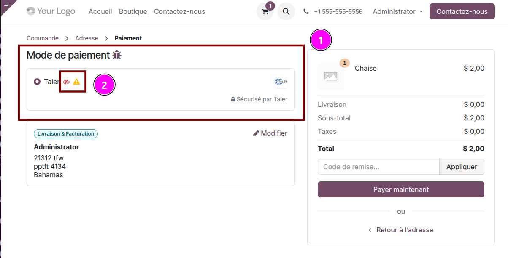
Au moment de payer en ligne, la clientèle aura la possibilité de choisir le mode de paiement. Si les devises sont paramétrées correctement, Taler devrait être une des options proposées.
Il se peut que vous voyiez certains symboles à côté du mode de paiement (2) :
un œil barré signifie que ce mode de paiement n’est accessible que par une personne disposant de droits d’administration (ce mode est généralement employé pour tester un nouveau fournisseur de paiement).
un signe attention jaune signifie que ce fournisseur de paiement est en mode test. Évitez d’employer le mode test en production.
{kind=link}
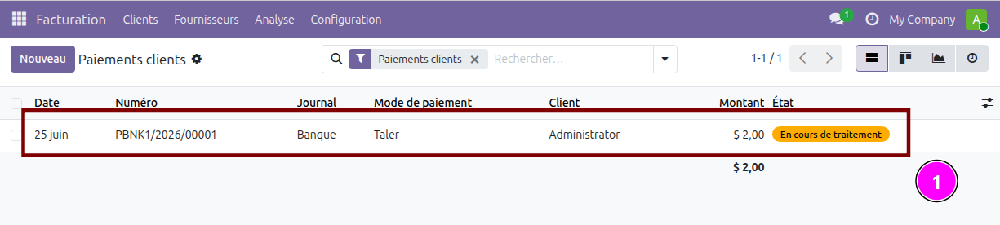
Une fois le paiement effectué, du côté administrateur, vous pourrez vous rendre sur Facturation -> Clients -> Paiements pour consulter la liste de paiements ainsi que le plus récent (1).
Rembourser un paiement en ligne¶
Dans Facturation -> Clients -> Paiements, cliquez sur le paiement à rembourser (1).
{kind=link}
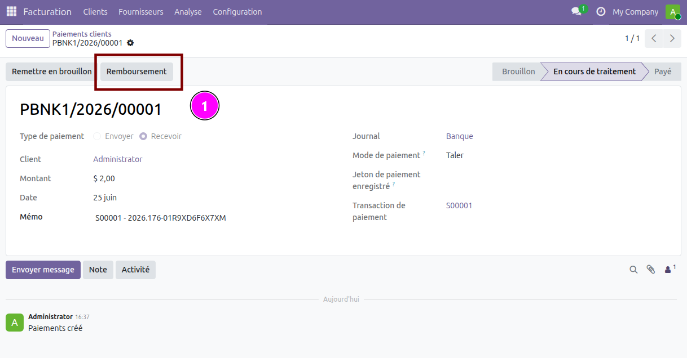
Cliquez sur le bouton Rembourser (1) et confirmez le montant du remboursement.
Cela créera un code QR de remboursement et l’enverra par email à la cliente ou au client.
{kind=link}
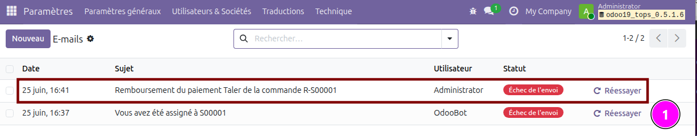
Pour consulter ces emails, rendez-vous dans Paramètres -> Technique -> Emails. Dans la liste des emails affichée, cliquez sur celui que vous désirez examiner (1).
Il se pourrait que vous deviez activer le mode
Dévelopeurd’Odoo pour accéder à cet onglet (ce mode est accessible dans les paramètres).
{kind=link}
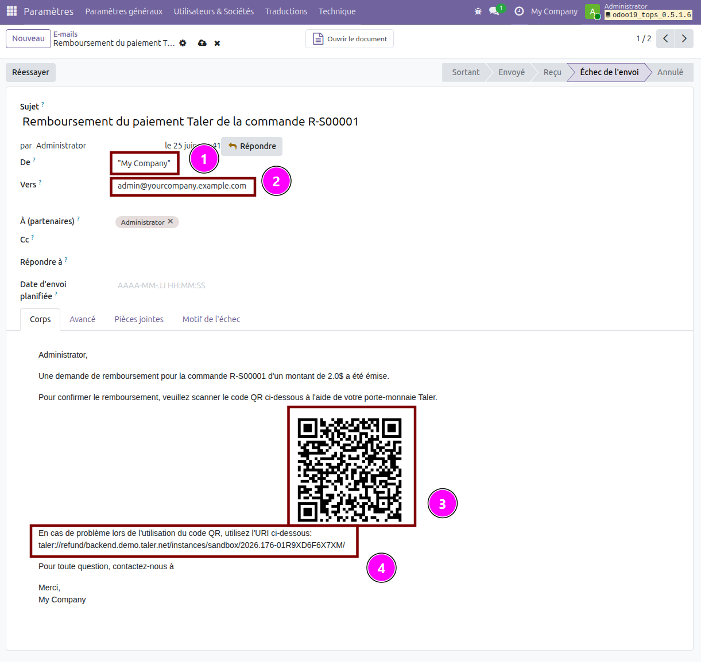
Sur la page de la liste des emails, vous pouvez voir l’adresse d’envoi de l’email (1) et son destinataire (2). Vous pouvez également afficher le code QR de remboursement envoyé à la cliente ou au client (3) ainsi que l’URI à utiliser s’il ne fonctionne pas (4).
Créer une facture qui contient un code QR Taler¶
Pour créer une facture incluant un code QR Taler comme option de paiement, vous devez créer une facture et indiquer Taler comme mode de paiement.
{kind=link}
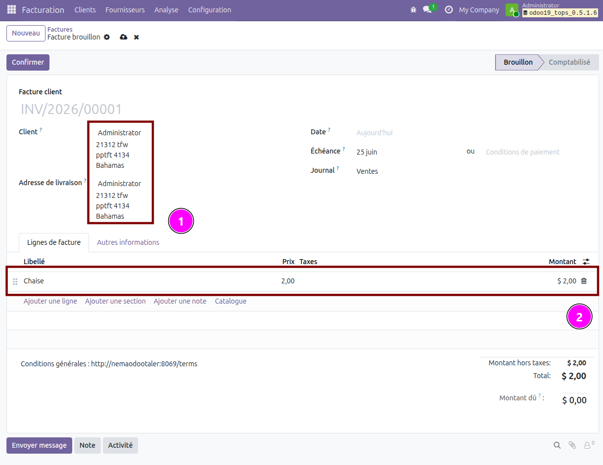
Il s’agit d’une nouvelle facture qui contient les coordonnées de la cliente ou du client (1) ainsi que le produit facturé.
Dans l’onglet Autres Informations, sélectionnez Taler dans le menu déroulant Mode de paiement. Vous indiquez de ce fait au côté client de payer cette facture au moyen de Taler. (Il aura toutefois la possibilité de choisir un autre mode de paiement pour régler cette facture.)
Une fois la facture remplie, vous pouvez la Confirmer et en afficher l” Aperçu en cliquant sur les boutons correspondants en haut de la page.
{kind=link}
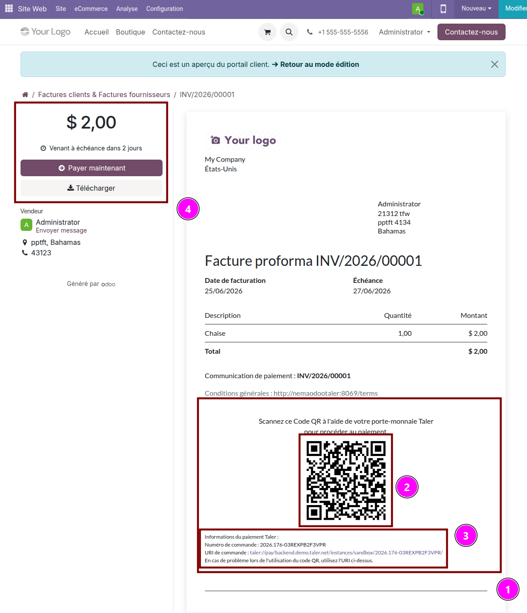
La section Taler se trouve au bas de la facture (1). Elle n’apparaîtra pas si le Mode de paiement n’a pas été réglé sur Taler. Dans cette section, vous pouvez voir le code QR Taler qui devra être utilisé (2) ainsi que l’URI à utiliser s’il ne fonctionne pas (3).
Un bouton Payer maintenant se trouve dans le coin supérieur gauche de la facture. Celui-ci permet au client de la payer en ligne (4).
{kind=link}
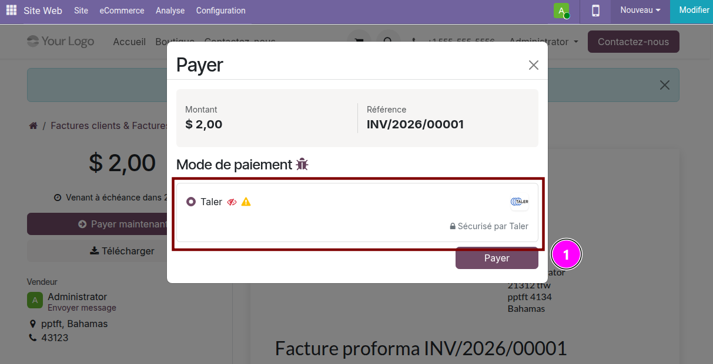
Dans ce menu, la cliente ou le client peut choisir de payer en ligne avec Taler (1).
Cette option déclenche le processus de paiment en ligne de cette extension, et est distinct du processus de paiment par facture qui aurait été utilisé si la cliente le client avait payé à l’aide du code QR de la facture.
Mise en place du point de vente¶
Pour mettre le point de vente Taler en place, vous devez configurer un nouveau mode de paiement dans l’appli PDV.
Dans Point-de-vente -> Configuration -> Modes de paiement et cliquez sur Nouveau.
{kind=link}
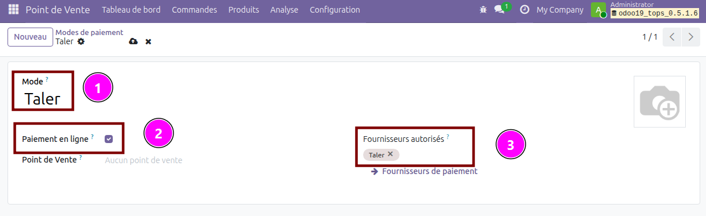
Dans le nouveau mode de paiement du point de vente, inscrivez le nom (Taler) (1), cochez la case paiement en ligne (2), et sélectionnez Taler comme Fournisseur autorisé (3). Le fournisseur Taler doit être Activé pour apparaître dans la liste des fournisseurs disponibles.
Note
Ce mode de paiement Taler ne sera disponible que dans ce point de vente et est distinct des modes de paiement créés par défaut dans cette extension.
Ensuite, vous devez activer ce nouveau fournisseur de paiment à chaque point de vente où vous désirez pouvoir l’utiliser. Pour ce faire, dans Configuration -> Point de vente, cliquez sur le point de vente que vous voulez modifier.
{kind=link}
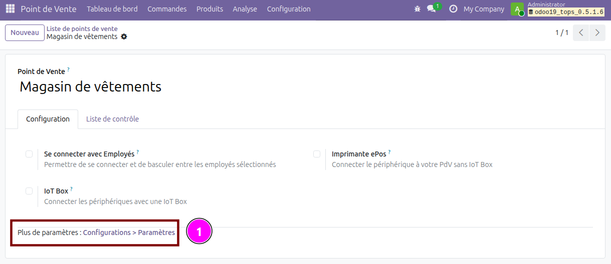
Sur cette page, cliquez sur Plus de paramètres : Configuration > Paramètres (1) pour vous rendre dans les paramètres de ce point de vente.
{kind=link}
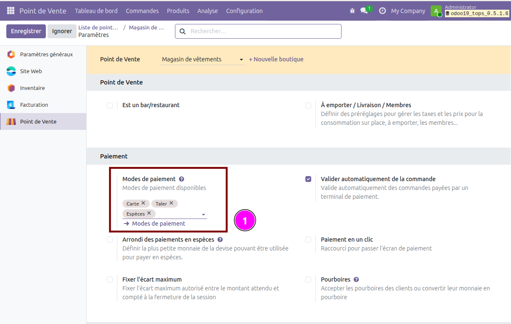
Dans ces paramètres, dans Modes de paiement, ajoutez le nouveau mode de paiement Taler que vous avez créé plus tôt.
Les clientes et clients pourront désormais payer avec Taler sur Point de vente !
Paiement en Point de Vente avec Taler¶
L’utilisation de Taler à un point de vente est simple. Au lieu de recourir à un échange Taler direct, la transaction passe par le processus de paiement en ligne propre à Taler.
{kind=link}
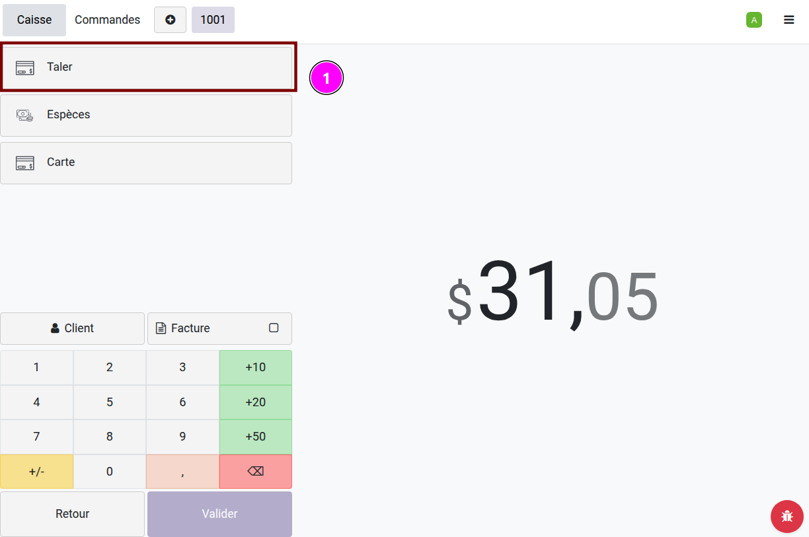
Quand une cliente ou un client s’apprête à payer, appuyez sur Paiement, sélectionnez Taler (1) comme mode de paiement, puis validez.
{kind=link}
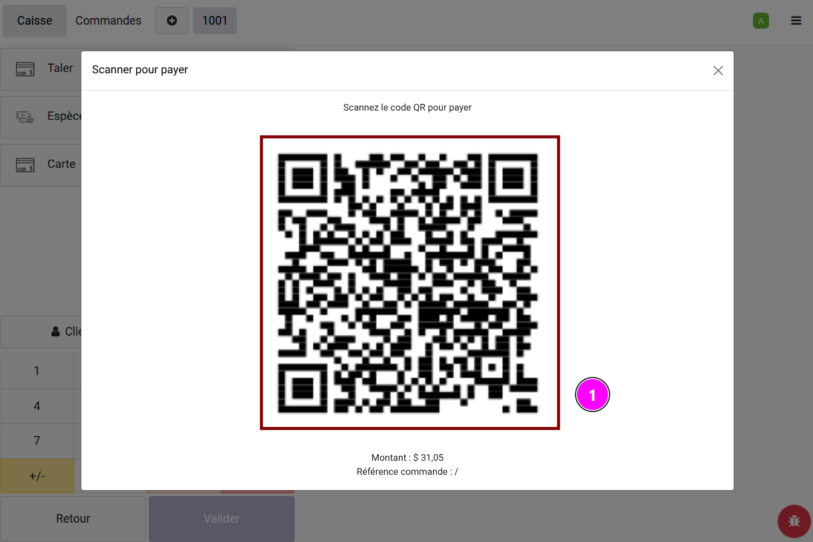
Cela génèrera un code QR (1) que la cliente ou le client pourra finalement scanner pour effectuer le paiment par le biais de Taler.